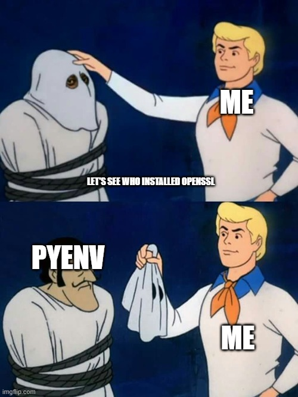

Gem Install No OpenSSL
If you've got OpenSSL installed via Homebrew, or ever ran brew install <package>, this
article could be of help. If not, it's most likely you're facing a different issue than I did. Please
lookup
other troubleshooting articles/quoras online.
TLDR;
Installing ruby via rbenv and then
running gem install <package> throws the
error
No OpenSSL found.... In my scenario, this was being caused
by a conflict between the OpenSSL installed by Homebrew
and the libssl-dev that
ruby-build was trying to
use. Running the command below fixes it:
rbenv uninstall 3.3.12
echo 'export RUBY_CONFIGURE_OPTS="--with-openssl-dir=/usr"' >> ~/.bashrc
source ~/.bashrc
rbenv install -v 3.3.12
|
It points rbenv to the correct location of the OpenSSL it needs to build ruby, making subsequent ruby related commands that need OpenSSL run successfully.
Introduction
Before publishing this blog to GitHub
Pages, I wanted to first see a preview locally. This would require me to run
Jekkyll, the same tool that GitHub Pages uses.
Therefore, I installed ruby using rbenv and then ran the command
gem install jekyll
and that's when I encountered the error
No OpenSSL found....
This blog covers the steps I took to pinpoint the issue.
The Problem
rbenv depends on ruby-build
when running the rbenv install command and ruby-build depends on
libssl-dev to build ruby. Running which openssl prints
/home/linuxbrew/.linuxbrew/bin/openssl, so clearly there's OpenSSL installed. Only
problem is, I
couldn't recall running brew install openssl at any point in time.
The initial suspect was Homebrew itself. I theorized that it's install script might have pulled in OpenSSL as a dependency.
But looking at the script, I couldn't see any proof of this. However, this didn't mean
Homebrew was innocent since which openssl clearly shows it installed OpenSSL
at some point. So I ran brew uses --installed openssl@3 which returned pyenv.

Turns out, pyenv depends on
OpenSSL, and therefore, OpenSSL got pulled in by Homebrew during pyenv's
installation.
But that still doesn't explain why Linuxbrew's OpenSSL keeps getting resolved instead of libssl-dev. So I checked, Homebrew's installation script and that's when I noticed the following block:
if grep -qs "eval \"\$(${HOMEBREW_PREFIX}/bin/brew shellenv[^\"]*)\"" "${shell_rcfile}"
then
if ! [[ -x "$(command -v brew)" ]]
then
cat <<EOS
- Run this command in your terminal to add Homebrew to your ${tty_bold}PATH${tty_reset}:
eval "\$(${HOMEBREW_PREFIX}/bin/brew shellenv${shellenv_suffix})"
EOS
fi
else
cat <<EOS
- Run these commands in your terminal to add Homebrew to your ${tty_bold}PATH${tty_reset}:
echo >> ${shell_rcfile}
echo 'eval "\$(${HOMEBREW_PREFIX}/bin/brew shellenv${shellenv_suffix})"' >> ${shell_rcfile}
eval "\$(${HOMEBREW_PREFIX}/bin/brew shellenv${shellenv_suffix})"
EOS
fi
|
The block basically checks if the command
eval "$(/home/linuxbrew/.linuxbrew/bin/brew shellenv)"
is present in the bashrc file and if not, instructs the user on how to add it. Once
the user abides and adds the command, it'll run on each terminal window open and prepend
/home/linuxbrew/.linuxbrew/bin to PATH. That makes pkg-config resolve to
brew's own
build of pkg-config and not the system's. Run which pkg-config and it
prints
/home/linuxbrew/.linuxbrew/bin/pkg-config.
Therefore, during ruby's installation, the rbenv install command ended up using
Linuxbrew's
pkg-config, which resolves the OpenSSL installed by brew install pyenv.
Consequently, it
never reaches /usr/lib/x86_64-linux-gnu/pkgconfig/openssl.pc, the one
libssl-dev
installed. Instead of failing loudly, rbenv install skips the OpenSSL step, and
installation completes.
However, unbeknownst to you, gem install is broken and will spout
No OpenSSL found whenever summoned.
The Solutions
There exists a temporary fix which works on the current ruby installation, meaning if
rbenv install was ever
ran
again, the error would resurface. Its shown below:
rbenv uninstall 3.3.12 PATH=$(echo "$PATH" | tr ':' '\n' | grep -v linuxbrew | paste -sd: -) \ rbenv install -v 3.3.12 |
The command that precedes
rbenv install
removes brew entries out of PATH for this single run,
leading to rbenv using the correct OpenSSL
dependency (one installed via apt-get), thus fixing subsequent
gem install.
And a more permanent fix which involves setting RUBY_CONFIGURE_OPTS:
rbenv uninstall 3.3.12
echo 'export RUBY_CONFIGURE_OPTS="--with-openssl-dir=/usr"' >> ~/.bashrc
source ~/.bashrc
rbenv install -v 3.3.12
|
This bypasses pkg-config detection for OpenSSL entirely and points straight at
/usr/include/openssl
and /usr/lib/x86_64-linux-gnu, regardless of what Linuxbrew has on PATH or in its
pkg-config search
order.
Now if you run ruby -ropenssl -e "puts OpenSSL::OPENSSL_VERSION", it should print the
OpenSSL version:
OpenSSL 3.0.13 30 Jan 2024
|